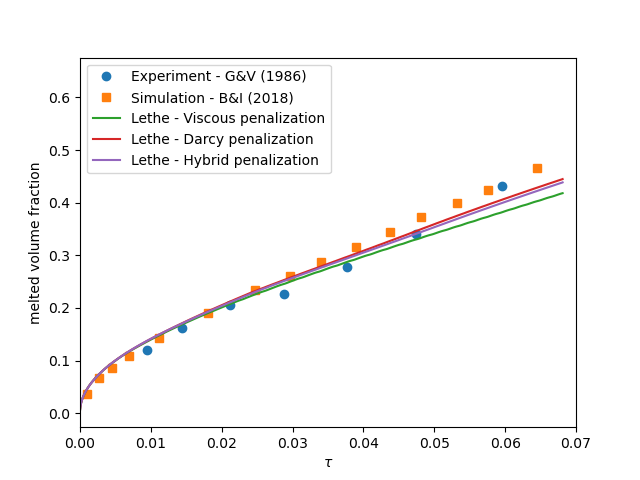

Melting Cavity#
This example simulates a two-dimensional gallium melting cavity and is inspired by the work of Blais and Ilinca [1].
Features#
Solver:
lethe-fluidPhase change (solid-liquid)
Buoyant force (natural convection)
Temperature-dependent stasis constraint
Unsteady problem handled by an adaptive BDF2 time-stepping scheme
Usage of a python script for post-processing data
Files Used in This Example#
All files mentioned below are located in the example’s folder (examples/multiphysics/melting-cavity).
Parameter files:
melting-cavity.prm,melting-cavity-stasis-constraint.prm,melting-cavity-darcy.prmPostprocessing Python scripts:
melting-cavity.py,compare-melting-cavity.pyPython script to calculate the dimensionless numbers:
dimensionless_number_calculator.py
Description of the Case#
The melting of metals (gallium in this example) with natural convection within a cavity is a well-known benchmark. The following schematic describes the geometry and dimensions of the simulation in the \((x,y)\) plane:

- The incompressible Navier-Stokes equations with a Boussinesq approximation for the buoyant force are:
- \[\nabla \cdot {\bf{u}} = 0\]\[\rho \frac{\partial {\bf{u}}}{\partial t} + \rho ({\bf{u}} \cdot \nabla) {\bf{u}} = -\nabla p + \nabla \cdot {\bf{\tau}} + (1 - \beta (T - T_{ref}))\rho {\bf{g}}\]
where \(\beta\) and \(T_{ref}\) denote thermal expansion coefficient and a reference temperature, respectively.
A two-dimensional block of gallium (initially in solid phase) is heated from its left wall at \(t = 0\) s. Its initial temperature is close to (but slightly smaller than) the melting point and the temperature of the left wall is higher than the melting point. Hence, the block starts melting from the left wall. In the melted zone, close to the left wall, the buoyant force (natural convection) creates vortices inside the liquid.
- The simulation parameters are selected according to the references [1] [2] to satisfy the desired values for the dimensionless numbers
- \[\text{Ra} = \frac{\rho^2 \beta g (T_w - T_m) L^3 c_p}{k \mu} = 10^5\]\[\text{Gr} = \frac{g \beta (T_w - T_m) L^3}{\nu^2} = 5.5 \cdot 10^6\]\[\text{St}_l = \frac{c_p (T_w - T_m)}{\lambda} = 0.041\]
where \(\rho\) is the fluid density, \(\beta\) denotes the thermal expansion coefficient, \(g\) is the magnitude of gravitational acceleration, \(T_w\) and \(T_m\) are the hot wall and the melting point temperatures, \(L\) denotes the characteristic length, \(k\) is the thermal conduction coefficient, and \(\mu\) and \(\nu\) are the dynamic and kinematic viscosities, \(c_p\) is the specific thermal capacity, and \(\lambda\) is the enthalpy of melting.
Note
All the four boundary conditions are noslip, and an external
gravity field of \(-1\) is applied in the \(y\) direction. For the heat transfer boundary conditions the temperatures of the left (\(T_l = 38 \, ^{\circ} \text{C}\)) and the right (\(T_r = 28 \, ^{\circ} \text{C}\)) walls are defined.
Parameter File#
Simulation Control#
Time integration is handled by a first order backward differentiation scheme (bdf1), for a \(41\) s simulation time with an initial time step of \(0.01\) second.
Note
This example uses an adaptive time-stepping method, where the time-step is modified during the simulation to keep the maximum value of the CFL condition below a given threshold (0.9 here).
Note
Note that the melting process is slow compared to the time-scale of the velocity. Hence we expect a large number of time-steps and a long simulation.
subsection simulation control
set method = bdf1
set time end = 41
set time step = 0.01
set adapt = true
set max cfl = 0.8
set adaptative time step scaling = 1.1
set output name = melting
set output control = iteration
set output frequency = 100
set output path = ./output/
end
Multiphysics#
The multiphysics subsection enables to turn on (true) and off (false) the physics of interest. Here heat transfer, buoyancy force, and fluid dynamics are chosen.
subsection multiphysics
set heat transfer = true
set buoyancy force = true
set fluid dynamics = true
end
Initial Conditions#
In the initial condition, the initial velocity and initial temperature in the simulation domain are defined. The initial velocity is equal to zero as the block is in the solid phase at \(t = 0\) s.
subsection initial conditions
set type = nodal
subsection uvwp
set Function expression = 0; 0; 0
end
subsection temperature
set Function expression = 28
end
end
Source Term#
The source term subsection defines the gravitational acceleration. The value of the gravitational acceleration in this example is selected to satisfy the desired values of Ra and Gr numbers.
subsection source term
subsection fluid dynamics
set Function expression = 0 ; -1 ; 0
end
end
Physical Properties#
The solid block melts into liquid in this example, hence in the physical properties subsection, we define the phase change parameters. Similar to gravitational acceleration, the latent enthalphy of phase change is selected to satisfy the value of Stefan number. A \(\Delta T = 0.2 \, ^{\circ} \text{C}\) is selected between the solidus and liquidus temperatures. For more information about the phase change model in Lethe, visit the Stefan problem example. The kinematic viscosity of the solid phase is chosen \(\approx 10000\) times larger than the kinematic viscosity of the liquid phase. The reference temperature is set to the liquidus temperature and a phase change thermal expansion model is used to ensure that there is no Boussinesq forcing term in the solid phase.
subsection physical properties
set number of fluids = 1
set reference temperature = 29.8
subsection fluid 0
set thermal conductivity model = constant
set thermal conductivity = 0.040516842071415184
set thermal expansion model = phase_change
set thermal expansion = 1
set rheological model = phase_change
set specific heat model = phase_change
set density = 1
subsection phase change
# Enthalpy of the phase change
set latent enthalpy = 200
# Temperature of the liquidus
set liquidus temperature = 29.8
# Temperature of the solidus
set solidus temperature = 29.6
# Specific heat of the liquid phase
set specific heat liquid = 1
# Specific heat of the solid phase
set specific heat solid = 1
# Kinematic viscosity of the liquid phase
set viscosity liquid = 0.0007366698558439125
# Kinematic viscosity of the solid phase
set viscosity solid = 10
# Thermal expansion of the liquid phase
set thermal expansion liquid = 1
# Thermal expansion of the solid phase
set thermal expansion solid = 0
end
end
end
Running the Simulation#
Launching the simulation is as simple as specifying the executable name and the parameter file. Assuming that the lethe-fluid executable is within your path, the simulation can be launched by typing:
to run the simulation using sixteen CPU cores. Feel free to use more.
Warning
Make sure to compile lethe in Release mode and run in parallel using mpirun. This simulation takes \(\approx\) 1 hours on 16 processes.
Results#
The following animation shows the results of this simulation:
A python post-processing code (melting-cavity.py)
is added to the example folder to post-process the results.
Run python3 ./melting-cavity.py ./output to execute this
post-processing code, where ./output is the directory that
contains the simulation results. In post-processing, the position of the solid-liquid interface at the top, center and bottom of the cavity, as well as the melted volume fraction are plotted and compared with experiments of Gau and Viskanta [2]. Note that the discrepancies in the interfaces are attributed to the two-dimensional simulations and they were also observed and reported by Blais and Ilinca [1].
{kind=link}
{kind=link}
Improving Computational Performances with Stasis Constraints#
Lethe is able to constrain temperature-dependent stasis on fluids.
To use this feature, the constrain stasis subsection is added to the parameter file (see melting-cavity-stasis-constraint.prm):
subsection constrain stasis
set enable = true
set number of constraints = 1
subsection constraint 0
set fluid id = 0
set min temperature = 0
set max temperature = 28.5
end
end
Employing this feature enables a more effective conditioning of the global matrix by imposing homogeneous velocity and pressure constraints on degrees of freedom (DoFs) of cells within the specified temperature range, consequently reducing computation time. For example, running the simulation with 16 CPU cores and the stasis constraint specified above only takes \(\sim 24 \; \mathrm{minutes}\) while the solved quantities of interest remain unchanged.
Caution
When using this feature, ensure that the imposed max temperature value is lower than the solidus temperature of the material. Additionally, we advise maintaining a buffer zone to prevent disruption to fluid flow resolution near the melting zone.
Darcy Penalization: An Alternative Approach#
Lethe supports an alternative strategy to impose stasis (no motion) within the solidified material using a Darcy-like penalization. This penalization adds a forcing term to the momentum equation to prohibit the motion of the solid instead of increasing its viscosity. This has the advantage of leading to a better matrix conditioning, at the expense of potentially increased motion within the solid phase. To enable this forcing term, a velocity source term must be specified:
subsection velocity source
set Darcy type = phase_change
end
Furthermore, the phase change subsection within the physical properties but also be modified to specify the Darcy penalty of the solid and liquid phase:
subsection physical properties
set number of fluids = 1
set reference temperature = 29.8
subsection fluid 0
set thermal conductivity model = constant
set thermal conductivity = 0.040516842071415184
set thermal expansion model = phase_change
set thermal expansion = 1
set rheological model = phase_change
set specific heat model = phase_change
set density = 1
subsection phase change
# Enthalpy of the phase change
set latent enthalpy = 200
# Temperature of the liquidus
set liquidus temperature = 29.8
# Temperature of the solidus
set solidus temperature = 29.6
# Specific heat of the liquid phase
set specific heat liquid = 1
# Specific heat of the solid phase
set specific heat solid = 1
# Kinematic viscosity of the liquid phase
set viscosity liquid = 0.0007366698558439125
# Kinematic viscosity of the solid phase
set viscosity solid = 0.0007366698558439125
# Thermal expansion of the liquid phase
set thermal expansion liquid = 1
# Thermal expansion of the solid phase
set thermal expansion solid = 0
# Permeability of the liquid phase
set Darcy penalty liquid = 0
# Permeability of the solid phase
set Darcy penalty solid = 1e4
end
end
end
Note that the viscosity of the liquid and the solid phase are now identical and that a very strong Darcy penalty coefficient is applied on the solid phase to restrict its motion. A third approach would be to combine this Darcy term with the viscosity model used above, resulting in an hybrid approach.
The following graph shows the evolution of the liquid fraction as a function of time using the viscous penalty, Darcy penalty and hybrid penalty strategy. We see that the viscous penalty tends to increase the amount of molten material. Whether or not this is a physical phenomenon cannot be assessed here.
{kind=link}